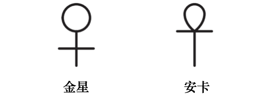

异象十一：天界的居住者
珍珠
清澈空气之明净清流，
丰盈满溢，充盈神圣形影；
宁静之境，乃本体认知之圆成，
作为最终伟大启悟之承继者，
步入终极涅槃彼岸，
栖居著无形崇高之众。
* * *
伟大圣域，遥远神圣居所，
属于圣洁者之团体，
神之驭者自此显现，
如黎明报信者，驾驭雄骏，
令智慧驶向每一位静默求道者。
* * *
诸逻各斯的绵延；
具备意志、行动、至高领悟；
单子栖居于此，投射闪烁火花，
辉耀于神圣阿特曼之光的维度；
广阔永恒领域之闪耀轮天使
属于神圣祖灵天神。
* * *
高举金杯，
让诸神在你杯中
斟满闪亮启示之露；
赐你超凡视觉与听觉，
使天使每句低语
皆抵达你内在灵魂，
充溢无上喜悦、深邃智慧与博学；
令你化作璀璨明珠；
成金色黎明中玫瑰色光，
成指路星！
成同道者疲惫路途上的明灯。
异象十一：天界的居住者
于伟大之光之上，亦在其内，仿佛凝聚了额外力量，似有巨大众灵蓄势闯入那崇高意识。
此时，一丝轻飘温流自内吹来，包裹信使、马乌和马乌媞，活跃的生命无声逼近，却不可见。
隐约有物井然预备，缓缓积聚，化作幸福极乐的庞大汇集。百万触角如线搅动，柔软、绒毛、温柔；不可见，但可感。光之灵魂乘起伏翼羽飞舞，却为神秘帷幔遮掩，广布于闪烁绚烂雾气。在这缤纷光之海里，千道光线闪烁强烈辐射，炽热光辉点缀广阔伸展的玫瑰色屏幕。
那光线中，无数发光微粒旋转跳舞，颜色纷呈难数。
紫罗兰色的微粒，关联所有大自然的星光体、所有形体范式，这些小粒子共鸣，发出B音。真靛蓝微粒，鸣响A音，它们连结宇宙心智或神圣理型。蓝色微粒，代表神秘大自然综合；音符为G。绿色微粒，对应大自然动物性或物质性灵魂，乃动植物智性本能泉源，音符为F。黄色微粒，音符为E，回荡禅那主智性体集合；其性如火，且充满至福。橙色微粒，音符D，亲和大自然的生命原则。最后，红色微粒如红血球，音符C，在灵性层面对应低等层面的性亲和力。
耀眼光中，这些原子自由欢快跳跃；交织，或漂浮灿烂云朵，或如烟火炸弹迸射，发出狂喜和声，具备敏锐智性，与超灵性层面的神圣直觉与洞察。
「这些单子在分化层面成二元，于轮回周期发展为三元组；即使投生后，也不受空间与时间所限，但弥漫于四元组低等原则。它们本质全能全知：乃天生全知，能将映像之光显现于半尘世或物质层面。」涅特鲁-赫姆说道。
「但并非所有单子都如此微小。」他续道，「还记得来自这些层面的天使单子吗？他们投身为人，赋予人类理解力；在那之前，人类仅具兽类本能。神秘智慧教导：活物与死物、动物与人之别，只在于火的潜伏或跃动。万物皆蕴生命之火，无一原子不带火。然而动物的三个高等原则沉睡未醒，仅是潜藏。直至祖灵与人类相融，奇迹方生：天使或曰祖灵的本质与所投生的人类和谐融合，人类始觉神圣血脉，方能启程漫长归途，重返最初所来之境——那时他不过一粒星火或原子，坠入客观世界的虚妄深渊。如是，天使单子作为有知觉的人类先祖，实则化为人类自身。
「每一原子终成可见的复杂单元，即分子；一旦堕入尘世活动，单子便历经矿、植、动物三界，终而为人。神、单子、原子，恰对应人的灵、心智、身体。
「单子乃原子之心智；二者皆是诸神在需形体时披覆的衣袍。你眼前闪烁的火花，皆是原子灵魂未降至尘世形躯前的样貌。他们是潜在的创造者，是菩提，是救主，是神圣智性的全能之根，是未来的星辰。尘世上它们不可见，正如《神秘格言》所言：真日真月不可见，真人亦然。
「地球本身原是其一，由无数这般原子聚成，在幻象中凝为一体。
「空间常被误作『抽象虚无』，实则是宇宙七原则之容器与身躯。在秘传教义上，它是万有的未知之器、未知第一因。其体无垠，以神秘学术语而言，它在我们现象界显现的原则，不过是存有七重泉源中最粗显的一层；如经中所教，无人得见所有完整元素。这些辉煌原子在尘世被重铸，且如同照镜般倒映。原子欲进化为圆满的七重人类，必备两个连接的原则：灵魂，以及心智之高等与低等方面。有人称低等心智为人格，即人外在可见之形；而高等心智为个体性，即一切内在原则（除灵魂外）。尘世生涯中，高等心智与肉身（即低等心智）紧密纠缠，而灵魂伴行其侧。
「高等心智乃智性之花，更在灵性意义上，是智性自我意识之果（我执）。故高等心智非神，亦非纯粹理性，而是这些能力与灵魂交融之物，从而进入更高的极乐状态，踏入意识第四层境，亦即人类进化至神之阶。
「是以，从至高大天使（或称禅那主），至低等灵性实体的有意识建造者，皆曾为人；他们在久远的时代周期中，以早期型态生活于地球，或在其他层面里。同样，低等、半智、无智的元素精灵，亦将在未来成为人类；因他们皆源于这些炽烈绚烂的微光粒子。高阶存有居于存在阶梯顶端；祂们是守望者，是神圣原型，俯察其于低等层面之影。两者间悬一金丝，随著其影向上进化，意识发生转变，金丝愈发耀目，终使晨日之光化作正午荣耀。
「每一影的单子（或曰发光原子），皆具完整独特之个体，与他者全然相异，纵其最初的灵与至一灵本为一体。然则，那安住于阴影躯壳内的闪烁火花，实为守望者禅那主的一部分；这便是奥义所在：『我父在天，与我原为一。』
「太阳是媒介，这些原子经它源源流向尘世，无物能阻止或限制。太阳周遭有无数天使合唱团，宛若大军，由禅那主不断监视引导；祂们也指导并观照一切人事与作为。万物因之得以维持与滋养；正如天界环绕有形界，充盈其内，使之遍具丰满与万象形态；太阳亦以光包裹万物，在各处成就众生的诞生与成长。天使合唱团受祂引领，其数繁、其类多，恰如星辰之数。每颗星皆有其天使，秉善恶之性而行其职，因这些天使的本质就是行动。祂们掌管俗务，一如诸神或禅那主所为；祂们动摇并颠覆国家与个人的根本结构，并把自身的样式烙印在我们的心智。祂们存在于我们的神经、骨髓、脉管以及脑质之中。祂们渗入心智，为使其能承接祂们能量的印记。但灵魂本身不受其辖，因灵魂属神之一部分，神以觉悟之光启照灵魂。凡非源于绝对者的，皆是幻象；因绝对者仅凭此一限定，便是至一而唯一的实在；故而，与其无关的一切——那些生灭与因果的元素——必然是幻象；从纯粹形而上之观点视之，此无疑问。
「在心灵层面，人类分为不同群体，各与一个天界群体相系，后者最初形成了心灵的人类。
「有一群人，其内在自我透过传承，与所谓『以太初生者』的禅那主群体有著本源连结。这群人诞生了人类的大先知、诗人、发明家、艺术家、音乐家与作家，因他们直接受高等领域的神秘守望者所控导。他们是人类的领航者，无论世人接纳与否；纵使起初遭拒，终有一日，他人将能瞥见他们在世间播洒的光。这些思想领袖，据说约三万人，受那些赋予智性与灵感的主所辖，祂们是全知全能的主。每位主各有其类的开悟者，在此天界透过灵性交感之纽带，两者紧密相系。欲与这些主沟通（共有七位主，各具特定运行之光），唯一途径是将自身置入某道光所辐射的灵性辉芒之中，而这些光皆由此处的核心灵域发散而出。
「禅那主本性双重，因其构成既包含物质固有的非理性能量，亦具智性灵魂或宇宙意识，宇宙意识引导此能量，并映现宇宙心智的理型。祂们有种种异名，如赫尔墨斯哲学中的诸神、神灵与守护灵；佛教的观音；或天神、意识火花、祖灵，以及其他诸多哲学体系中的称谓。
「尽管这些主在天界阶序中位阶崇高，但祂们亦是幻象，并不比人类更具恒久性。然而，万物皆相对真实，因认知者本身亦是映影，遂使被认知物对他而言，将如自身般真切。无论我们意识运作于哪一层次，该层次的事物当下便是我们仅有的现实。但无一物永恒，除却那隐藏的绝对存在——它自身含藏一切实在之本体。只是，当我们在发展阶梯上攀升，便会觉察：过往所历诸阶段，皆错将影子误认为真实；自我的上行之旅是一连串渐进苏醒，每一步都以为此刻终于抵达『真实』；然事实上，唯当我们达至绝对意识、并将自己的意识与之融合，方能自幻象所生的迷误中解脱。不变至一的主安居于时间至深之处，亦处于大周期最炽烈的动荡中。祂之上是神之灵，其隐蔽圣殿被永恒幻象的幽暗所环绕。
「最初七位禅那主乃逻各斯心智所化生的实体；祂们是纯粹的火焰，亦是智性之息。据说这些天使的自我意识从被动静止转为主动，遂得以独立。其中一部分投生为人，另一部分则以人为其映像之载体。某位伟大主曾言：『我于众生无异；敬我者在我之中，我亦在其之中。』正因如此，埃及的启悟候选人必将其神庙所属之神予以人格化，每座神庙皆奉一神，对应一位禅那主。犹如该神庙的大祭司是其神的人格化，亦如教皇步入内圣所时，便化身彼得乃至基督。
「若能明白至一主本属无限而无制约，就能理解诸般创造者诸众何以必需。此至一主、此意识状态或原则——任凭称呼——本身无从创造，因祂与有限、有制约之物并无直接关连。
「倘若自然所现一切奇迹，包含煌煌太阳、行星，至细草微尘，皆由绝对完美者直接所造，或经其最初能量直接作用而成，则万物理当如造主一般完美、永恒、无限。然自然之中，处处可见未臻完美之作，足证其出自有限制约之存有，无论彼等在禅那主、大天使或诸神阶序中何等崇高。这些未竟之作，皆是在有限诸主指引下演化而成的产物。
「 最初诞生的逻各斯不是一种流溢，而是一种与至一神永恒共在、本然固有之能量。此能量或状态乃自体生发，非由造物者之主动意志或意识所派生。《光辉之书》提到了流溢，然此称仅适用于首三质点所生之七质点。至于前三者——王冠、智慧、理解——所成三位一体，该书则称之为『内寓』，以明其别：即与主体共存固有之物，换言之，即能量。而这些辅佐者，如轮天使、半人之造物主、诸天使，以及在『大议会天使』领导下的建筑师，连同其他太阳系筑构者，解释了宇宙的缺陷。此一缺陷，恰让神秘科学引为论据，用以证明此等力量之存在与活动。斐洛几近真理，他将恶之起源归于物质组成中掺混了劣质力量，也掺混于人之构形中——此工程乃委托予神圣逻各斯。
「是故，创世者非至一无限之主，亦非其映像，实乃『七神』及其诸众；彼等以永恒物质塑成宇宙，并藉至一实在、至一生命之映像，赋其客观生命以活力。
「古老教义有云：『火焰先以光辉主之姿降临其疆域，召唤此域（例如太阳系）至高的流溢，使之成有意识之存有，继而复升归其本初之位，于彼处护持并指引其无数光束或单子。祂唯拣选前世具足七德之人，作为其化身。至于余众，祂则以无数光束映照每人。然则，纵是光束，亦属万主之主的一部分。』
「是以，埃及教义与其他立基哲学的信仰，揭示人不仅是心智与身体之结合，更在灵魂加入后——神圣的灵性原则——成为三位一体；灵魂携带智慧与觉悟，终与心智相系。埃及人知晓人乃七重构造，依序如下：
- 卡：躯体。
- 卡巴：星光体或幽灵。
- 巴：高等心智。
- 阿克：尘世智性或低等心智。
- 莎：或称木乃伊，其作用始于身死之后（但此处须将木乃伊与赋生命火花视为两个独立原则）；及
- 奥西里斯：至高、未受造之灵，即灵魂。
「诸原则各具一道或多道光线，依其本性，可直接与高等层面单子交感。
「人一旦将本体完全融进宇宙本体，人便成为天界存在，等同于最高智性，从此栖居天界。正如耶稣对撒都该人所说：『配得那个世界的人……不娶不嫁……也不会再死。』
「于是他们就成为了原型，将再次映现于未来的人身上。人类历史上所有伟大人物——耶稣、佛陀与其他圣者——都只是存在了数百万年的人类原型的映像，在一次次转生中，逐步趋近圆满。因此，有些人生来便受其神圣原型所激活，在神秘力量驱使下，反复降生于世，而此力支配世界命运。
「高等心智指引意志，低等心智却将其扭曲为私我的欲望。这正解释了某些人的陨落：他们生怀崇高天命，却将力量滥掷于贪婪与虚荣的幻梦。
「诸禅那主已无欲，且纯粹。祂们早摆脱低等心智与肉身的桎梏，不再挣扎，也无欲念需粉碎。祂们已修完尘世生命学堂，毕业升入更高之境。意识的至高状态直接流溢自绝对者，此状态也是宇宙中存在的第一个境界。此境界对应于非实体性的原初临在阶序；那所在之处对我们而言并非任何「地方」，而那种状态也不是人类理解所能称为的「状态」。这种非实体之境或阶序，包含了过去、现在与未来的一切，从大显现期起始至终结。其中栖居著最高的神灵，祂们已达至无可演进之地步，或可说这些最高实体已结晶于纯粹与同一之中。
「次一层的天界，住著不同阶序的天界教师、主、佛或大师。此境与人类意识的顶峰相关，任何尘世间的开悟者皆无法超越此境；若超越此境，踏入那状态，便再无法回返人间。这两重境界纯属超形而上。其后五种状态，则关联于人的高等及低等感官、及相应的亲和力，并与这些感官所显现的每一道光相连结。
是故，人内在藏著七个神圣阶序的七重微弱映现；其高我*便是直接之光**折射而成的一束辉芒。
「七阶序即七道光，是自未显现之光中显现的智性、觉知、活跃的原则。对人类而言，那未显现之光即是黑暗。
「每当世界导师降临，他便包含所有这些原则；不，这样一位导师实为一切神圣属性的本质，由智慧诸主特意造就，以成就其转世目的，并向人类传递神圣讯息。
「至于七位大主所掌的权能，虽浩瀚无匹，却不应称作全能——唯至一神方配此力；祂是不可知、不可名、内在于宇宙的神，亦即灵与物质二者无从分割之本体。
「神秘主义所描绘的七大造物神，具双重面向：阳性属灵，阴性属物质；正等同于灵与物质这组对立原则。
「每一个创造性的逻各斯或『与父合一的子』，是诸世界统治者的总和。基督教神学亦将『临现七天使』视作神的美德与人格化属性——这些由祂所造，并成为大天使的存在，宛如梵天创造摩奴一般。罗马天主教的神义论承认：那创造性的『最初话语』便是这些天使与大议会天使之首，从而承认基督与祂们相等。若将诠释限于尘世，最初分化的『诸自我』（即大天使或诸神）之职责，在于赋予原初质进化的推力，并引导成形的力量催生诸般造物。诸天使便如此受命去创造。尘世经低等物质力量预备妥当后，诸神依循进化之法则降临，以构筑进化的终极冠冕：人类。因此，「自生者」与「自存者」投射出他们淡薄的影身——唯有一个叛逆群体拒绝此举。祂们虔诚至极，以致宁可拒绝『创造』，但求永保『处子之青春』，以期先于同伴抵达最终的解脱：涅槃。祂们亦不愿造出无意志、无责任之人类，更不肯将自身属性暂时映现于人类。祂们属『火天使』阶序一类，位居更高的意识层次；其映现投射到人身上，仍会使人保持不负责任的状态，从而阻碍任何向上提升的可能。祂们认定：尘世作为最低、最物质的层面，无法孕育灵性与心灵的进化；这些天界存在生而完美，既无功德可积，亦无罪过可累。若人类仅是惰滞、凝固、静止完美的黯淡影身，便注定要在尘世如无梦长眠般度过一生；如此，人在此层面便成失败之作。若非诸神向人类投下一道神圣光线，一切皆将如此。
「凡此种种，所指皆为人类的灵性觉醒，而非其肉体创造——因在诸神降临、赋予进化的意识之前，人类早已以动物之形存于世。这进化的意识如循环、似螺旋般前行；此乃不变自然法则，是哲学形而上学中的永恒运动。
「是以，我们同时有七支人类群体，于地球七处相异之地进化，由七位主宰并行创造。《神圣皮曼德》有云：『此乃至今仍隐之奥秘。自然与天人（埃洛希姆、诸神、禅那主）相融，化生奇迹……七人类，皆具男女双性（雌雄同体）……依循七总督之本性……』或称七诸众，祂们投射并创造了人。
「依巴比伦创世传说，这些『雌雄同体』之人因缺失性别间的平衡，因不完美而被毁；那些本不存在者加入平衡后，反令其灭亡。
「换言之，他们起初投身为雌雄同体之身，其后方转世为有性别的人类种族。在谈到这些『统治者』时，可见灵与物质的『父－母』诸神，乃永恒不可分割。
「天人，亦称四字神名，为原初神，乃阳性神的首生者，亦是其影的初显，称为第二逻各斯。祂是普遍的形体与理型，化生宇宙本身的显现逻各斯，即亚当-卡蒙或卡巴拉四字圣符。第二逻各斯源于第一逻各斯，发展出第三个三角形；末者乃天使低等诸众，诞生了人类。诸神——摄政者与诸导师——皆真实存有，于人类幼弱时，便以灵性孕育、哺养、引导之。祂们是发光者，灵目闪烁；伟大、乐助、不朽、纯净。这七者心念如一、言语相契、行止同调。祂们创造又毁灭人类后裔，亦是其护佑者、监察者与统治者。那双闪烁灵动的眼睛，便是星辰；祂们乃七大行星的主宰，故存于物质界与星光界。在灵性层面，祂们是神圣之力，是守望者、祖灵或父辈。凡人只须灵性足够，自能知晓，届时无须强迫其领会这至高智慧。他们将明白：每一位世界改革家或导师，皆是逻各斯的直接流溢，不论其名为何。换言之，这样的存有本质上是七者(即七重神之灵）之一的降世，且已于过往无数周期中显现。是故，理型之光源于理型之光，亦来自发光智性体；此智性体永在，其一体性本质即笼罩宇宙的灵。
「七重天界（存在的七层面）中的诸禅那主，是现行与未来元素的本体；正如自然的七力天使，乃更高阶次的高等本体。
「《圣经》所载埃洛西姆一词，本为复数，却遭基督教译者谬译为单数。诺斯替派深知此义，他们是早期基督教会中最具哲思的教师。他们视埃洛西姆为人类的创造者群，属低阶天使，于自然中甚至难称崇高之力。埃洛西姆相当于印度教的生主，仅塑造人类的物质身与星光体框架，无法赋予智性与理性；故以象征之言，祂们并未『创造』人类。
「其居首者，称奥西里斯，或首位质点、首位天神、善神。祂们构成高阶灵性存有的第二面向，呼应自然一切之双重性。因此，圣保罗论及世界的七位统治者——即『世界支柱』——亦分两组：一组司掌高层世界，另一组指引并守望物质世界。在无形的意念宇宙中，祂们实为同一神的两面显现。
「因此，盲目物质之结合，实由灵所导引；所指乃星光界诸神，非神之气息。盖星光界诸神，兼具灵与物质双重本质，已为物质所染。至于天界居民，可于《随歌》中密传窥得：『凡此世间众生，不论动者静者，都是最先消溶（在一周期终结时，一世界、行星链或太阳系之生命皆被收回，活动及显现皆止息）；其后，轮到元素形成的各种型态消散（元素所塑的可见宇宙）；诸相既灭，则一切元素皆解。此即众生上行之序。诸神、人、犍陀罗（天界歌班，在宇宙中乃太阳火之综合力，汇成其威能：于心灵层面上，是居于太阳中之智性体，属七光中至高者，或在神秘意义上是月亮中的神秘力量；在物质层面是声音与自然之声的现象性起因，于灵性层面则是声音的本体性起因；毕舍遮（邪恶元素精灵，或死者的亡灵）；阿修罗（乃灵性存在，其行为不必然是演化之恶端或不和谐，亦存于宇宙和谐一面；近代神智学文典中，谓其属第五创造阶序之灵性存在，或源于往昔宇宙，且自行星逻各斯迸发时已臻圆熟，或为首条行星链之果，乃众多宇宙神话之『反叛者』）；罗刹（印度圣典所载半人类的巨人或泰坦，属亚特兰提斯第四亚种族，或图兰之裔）——凡此种种，皆由自然所造（自性或原质，具造形力的自然），非经由行为或物质起因。这些诸界创造者于尘世屡屡再生。凡由祂们所生出的一切事物，也都会在适当的时期溶解，回归于那五大元素之中，犹如海中的波浪终将复归于海。此五大元素，在各方面都超乎构成世界之元素（或曰粗显元素）。而自五元素（诸逻各斯，或逻各斯之七光线或流溢）解脱者，方臻至境。生主只通过心智造就此一切（借由禅那，即心智专注投入抽象观照，亦称瑜伽第七阶；第八阶为三摩地*，或称狂喜冥想）。」
「此等光之子之诸众，乃灵性人之本源；乃最高逻各斯全知全能之神圣智性体，其『如焰降自永恒之火，蔓延流布，不动不增不减，恒常不易，直至存在周期之终』，终成尘世层面之宇宙生命。」
「人类的灵性之魂，源自智慧诸子之本质；而灵性人直指更高『彩色之环』，即神圣棱镜，流溢自至一无限白环，亦称至高逻各斯。诺斯替派视星光界诸神为伊达波思之子，而伊达波思复为索菲娅（智慧）之儿。伊达波思从自身产生了六个星灵：耶和华、沙伯、阿多纳乌斯、伊洛厄斯、奥瑞厄斯、阿斯塔法厄斯，皆为次神。古人素来不将太阳视为行星，而奉之为中枢恒星；七行星乃太阳之兄弟，非其子嗣。
「七颗行星和谐运转，『其间隔仿佛音程，奏出各式音声，臻于完美协调，遂成至甜之旋律——唯其宏大超乎人耳所闻，故吾辈未能听闻。』山索里奥斯如是说。单子为万物之本原，毕达哥拉斯门生所传即此。数字生于单子与不定的二元（或曰混沌）；数字生点，点生线，线生面，面生三维；由此衍生固体，含四元素：火、水、气、土；其转化交融，终彻底改变世界之构成。天界最初之单子，未具尘世形躯，亦无独立人格或自我意识。彼等皆无个体性，不似凡人会言：「我为我，非他者。」因其特征以群体为单位，非独立单元；且随所属层级而异。愈近至高之境，各群体之个体性愈纯粹、愈不彰显。它们于诸方面皆有限，唯其高等原则例外——那不朽本质，作为宇宙神圣之火的映影，仅在幻象领域中个体化、分离，其分化过程与万物同样虚幻。它们拥有生命，因其乃绝对生命投射于宇宙幻象屏幕上之流影。
「祖灵造就物质之人，乃自其空灵体中投射出更为空灵、更加如影般的相似体；此相似体可谓『双重体』或『星光体』。如此一来，单子得其最初住所，盲目物质得有模型，之后基于此根基构筑。
「在添加了智性心智之后（初时是潜在的），便将人类之魂的双重面向结合身体与低等心智，也结合其余诸原则；在灵魂耐心引导下，高等心智于千百万年尘世转生中缓缓觉醒，终至与灵魂合而为一。这些自影身进化为辉光天使，各依其色其类。待其终成至高禅那主，便在绝对存在的可畏奥秘前，只能无知垂首。然进化未止于此；终极解脱（与绝对存在融合），乃由简入繁之终点，复归至一生命之纯一；及抵实在，真工作方始于黑夜之体中——此即伟大白昼之体！
「那白昼被一环所包围，除记录者外（太阳系之伟大神灵，执掌万物命运）无人能穿越；盖此『无可穿越之环』乃分隔有限（纵使人视之无限）与真无限之边界；是为万物终极归宿！
「人类意识的低等心智，显现于所谓有形或原子形体之天界群体。祂们被称作不朽的单子，并借由其下阶序，构成最初七重诸众之首组——此关乎人类、意识与智性存在的伟大奥秘。自彼层面降下的心智胚种将坠入生成。这些胚种将化为物质细胞中的半灵性力量，并成天赋遗传之因。这些物质细胞的内在灵魂之钥（那主导胚种原浆的半灵性原质），终将开启生物学家未知之域，解如今胚胎学的幽暗之谜。然七层面中最强大、最神秘、最奥秘的区域，乃由行星金星（亦称舒克拉）所代表；此为男神，系吠陀圣贤布里古之子。正是透过舒克拉，最初的『汗生者』诞下了后世双性之人类种族。
「是故，人类第三种族（雌雄同体）以圆与直径之符号为象征；至第四种族，则以横直径与半垂线之符号为标志，表已具男女，虽未分开；其后遂成十字，即男与女，彼此分离，落入世代。金星之标志乃圆球（女性）置于十字上，示前者主导人类自然生殖。
而埃及安卡，象征生命，实乃金星或伊希斯之另一形貌；秘传教义中，意谓人类及众生已脱神圣灵性之圆圈，坠入物质男女之世代。毕达哥拉斯称舒克拉-金星为『另一太阳』。

「神秘教义将金星视为地球的灵性原型。因而世间一切罪愆，金星皆能感知；金星每一变化，亦映现于地球。第三种族的导师是地球与人类的守护神灵；而金星被描绘为第四种族巨人的导师，他们曾在某一时期统御全地，并击败了次级的神祇。秘传神秘学所关涉的，是金星的摄政主宰，即那注入生命的禅那主。金星，亦称路西法、舒克拉或乌萨纳，无论于物质或灵性层面，皆为地球的承光之体。早期基督徒深知此理，甚至有一位罗马教皇以「路西法」为名。
「每个世界皆有其父母恒星与姐妹行星。地球是金星收养的幼弟，两处的众生却迥然不同。每一层面的形体与有机体，皆与其所居层面的性质完全相谐。层面无穷，各异其趣；各层面的存在皆不相似，亦不似其后代。这说法，与史威登堡所述全然相悖；而占星家惠更斯声称其他星球上的众生与地球无异，甚至形貌、感官、才智、技艺、居所、衣饰皆同——更是谬误。
「那些注入生命的智性体，活化了众生的中心，所受崇拜的名号各异、象征纷繁。但启悟者所尊崇的，仅祂们为那个的显现；至于那个是创造者抑或其造物，则非言语所能及，亦非知解可达。绝对者不可定义，亘古以来，凡俗与不朽者皆未亲见，亦未领会。易变者无从知晓不变者，有生者无从感知绝对生命。因此，人类无法认识高于天界祖灵的存在，亦不应崇拜祂们；但当知晓人类自身的由来。
「是故，每颗行星皆象征物质与心灵中一个独特的层面；无二者相同。更有深层教导指出：即便是禅那主这般至高的造物神，也无法全然理解前一个太阳系进化。唯第一逻各斯——那未显之父自我显现之子，那人类诸种族创造者的创造者——能在永恒中保藏所有太阳系进化的经验与知识。
「人类的命运，是从最低的尘世向更高层面攀升。他先达至『智性与良善者』的心灵之境，于此更重内在状态而非人格；此乃较高之心灵状态。继而进入神圣状态，舍尽一切偏好欲念，踏上重聚之途。再至超神圣状态，小我与感官亲和尽失。此为进化前四阶段；一旦圆熟，他便与那助人进化的最高神秘阶层合一，于菩提界得宇宙本体意识。
「在此后是内在基督状态，属神圣火焰层面，乃至高天使所居，位在祖灵与天神之域。最终，他抵达极致狂喜的至高意识境界，于此连自我个体意识皆尽消融。此刻，他已立于大抉择门前。虚幻化为无尽实在，尘世连同一切星光界皆如薄雾消散。绝对真理压倒相对真理；他进入自我分析观照之境，人格的绝对意识融入非人格的自我，超脱一切幻相。此后，他可再度显现，以寻常样貌教化世人。这种降生偶一为之，或为有意识，或为无意识，端看再次居于人身时，是否觉知自身崇高位阶。又或者，他可继续前行，进入一种超越一切描述、超越一切人间理解的意识状态；他拥有选择的自由——正如每个人，在较小的尺度上，亦皆拥有选择的自由。」
涅特鲁-赫姆停下脚步，依然能感知到浩瀚的神圣存有与临在。祂们隐形不现，凡人肉眼若得窥见，恐怕要灼盲失明。天界仿佛浸透了天使之声，甜美、虔敬、满溢赐福。诸灵展翼跃动，力量充盈，永驻青春璀璨的朝气之中；纯净而静谧，怀揣炽烈之爱，焕发空灵的生命与欢欣。祂们是神之意志的战车，永远颂赞著祂，在祂无边的国度里飞驰，履行祂的天使命定，狂喜而超然。每一位皆是人类进化的缩影——祂们都曾为人。而今，祂们是火焰之主、火之诸子，属于那伟大的灵性存在阶序，导引著太阳系，未来更将统御全宇宙。自万古至万古，祂们存在于阶序之中，沉入幻象最低形躯，再沿壮丽的辉煌弧线攀升，并将永续拓展其力量、威仪与华美；直至自身化为不朽者诸主，虽未显现却无所不在，因为一在万有之内，万有在一之中。
这是全人类共同传承。